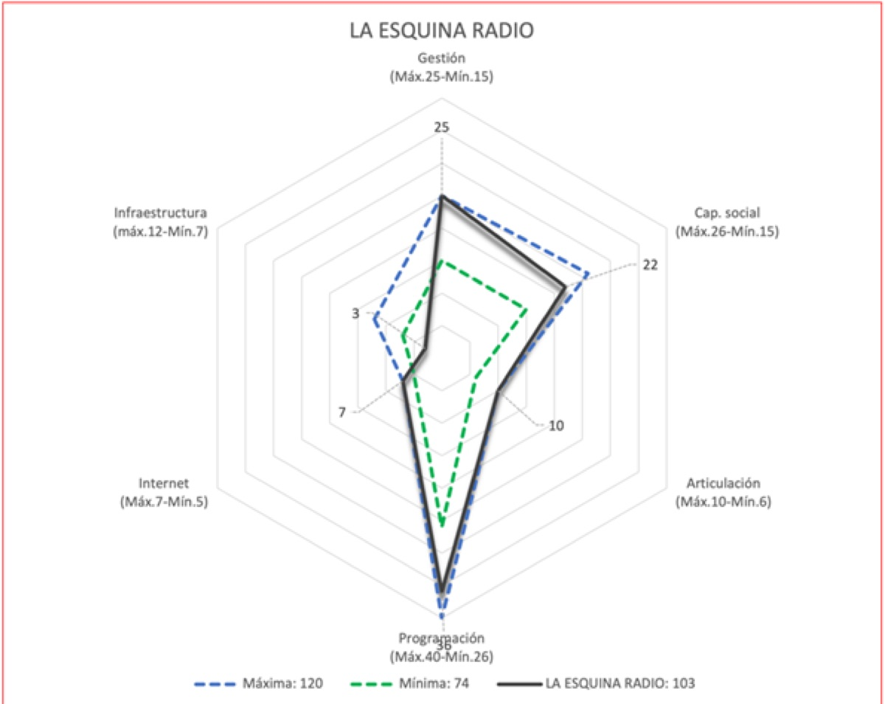

The Social Profitability Indicator in Communication (IRSCOM) was created by the LabCOMandalucía research group at the University of Málaga in 2012. The tool assesses the activity of media and information outlets in terms of their contribution to social well-being, citizenship and territory. Beyond assigning scores, IRSCOM works as a mirror that reflects the strengths and weaknesses of media outlets in each field of analysis, helping them improve their social profitability. Over ten years, the indicator has been adapted and applied to local public radio stations, community broadcasters, national general-interest radio networks and national general-interest television channels, both public and private, in Spain, Colombia, Andalusia, Castilla-La Mancha and Murcia. It has also influenced Andalusian and Spanish audiovisual legislation. This paper summarises the key milestones of IRSCOM and its implementation since its beginnings.
Journal articles · 2024
IRSCOM: Diez años del Indicador de Rentabilidad Social en Comunicación
[IRSCOM: Ten Years of the Social Profitability Indicator in Communication]
Textual & Visual Media, 18(1)
